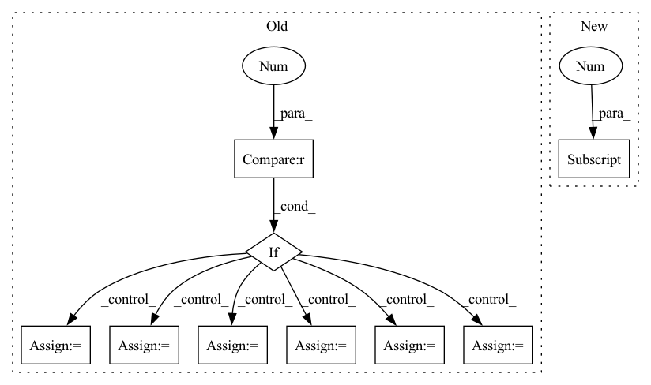

Pattern ID :29440

Before Change
def __call__(self, image, targets, input_dim):
boxes = targets[:, :4].copy()
labels = targets[:, 4].copy()
if targets.shape[1] > 5:
mixup = True
ratios = targets[:, -1].copy()
ratios_o = targets[:, -1].copy()
else:
mixup = False
ratios = None
ratios_o = None
lshape = 6 if mixup else 5
if len(boxes) == 0:
targets = np.zeros((self.max_labels, lshape), dtype=np.float32)
After Change
def __call__(self, image, targets, input_dim):
assert targets.shape[1] == 6 if self.tracking else 5
lshape = targets.shape[1]
boxes = targets[:, :4].copy()
labels = targets[:, 4].copy()
if self.tracking:
In pattern: SUPERPATTERN
Frequency: 3
Non-data size: 9
Instances
Fragment ID: 87345108
Project Name: zhangming8/yolox-pytorch
Commit Name: e162fc0465b1f5d8b3211cdc81fd8eabb6dd55c7
Time: 2021-07-26
Author: zhangming8@github.com
File Name: data/data_augment.py
M Class Name: TrainTransform
N Class Name: TrainTransform
M Method Name: __call__(4)
N Method Name: __call__(4)
M Parent Class:
N Parent Class:
M File Name: data/data_augment.py
N File Name: data/data_augment.py
M Start Line: 196
M End Line: 257
N Start Line: 196
N End Line: 265
'>
Before Change
if derivative == 0:
return fast_power(xyz, k, mask0, mask2).prod(-1)
elif derivative == 1:
km1 = k-1
km1[km1 < 0] = 0
xyz_km1 = fast_power(xyz, km1)
xyz_k = fast_power(xyz, k, mask0, mask2)
kx, ky, kz = k.transpose(0, 1)
dx = kx * xyz_km1[..., 0] * xyz_k[..., 1] * xyz_k[..., 2]
dy = ky * xyz_k[..., 0] * xyz_km1[..., 1] * xyz_k[..., 2]
dz = kz * xyz_k[..., 0] * xyz_k[..., 1] * xyz_km1[..., 2]
if jacobian:
return dx + dy + dz
else:
return torch.stack((dx, dy, dz), dim=-1)
elif derivative == 2:
// prepare the exponets
km2 = k - 2
km2[km2 < 0] = 0
xyz_km2 = fast_power(xyz, km2)
xyz_k = fast_power(xyz, k, mask0, mask2)
kx, ky, kz = k.transpose(0, 1)
d2x = kx*(kx-1) * xyz_km2[..., 0] * \
xyz_k[..., 1] * xyz_k[..., 2]
After Change
output.append(fns[d]())
if len(derivative) == 1:
return output[0]
else:
return output
'>
Fragment ID: 87345109
Project Name: nlesc-jcer/qmctorch
Commit Name: eb279d7d1838b1b81fc21cdc728e62ffdf10e29d
Time: 2020-06-04
Author: nicolas.gm.renaud@gmail.com
File Name: qmctorch/wavefunction/spherical_harmonics.py
M Class Name: AnonimousClass
N Class Name: AnonimousClass
M Method Name: CartesianHarmonics(6)
N Method Name: CartesianHarmonics(6)
M Parent Class:
N Parent Class:
M File Name: qmctorch/wavefunction/spherical_harmonics.py
N File Name: qmctorch/wavefunction/spherical_harmonics.py
M Start Line: 110
M End Line: 151
N Start Line: 148
N End Line: 163
'>
Before Change
if derivative == 0:
return fast_power(xyz, k, mask0, mask2).prod(-1)
elif derivative == 1:
km1 = k-1
km1[km1 < 0] = 0
xyz_km1 = fast_power(xyz, km1)
xyz_k = fast_power(xyz, k, mask0, mask2)
kx, ky, kz = k.transpose(0, 1)
dx = kx * xyz_km1[..., 0] * xyz_k[..., 1] * xyz_k[..., 2]
dy = ky * xyz_k[..., 0] * xyz_km1[..., 1] * xyz_k[..., 2]
dz = kz * xyz_k[..., 0] * xyz_k[..., 1] * xyz_km1[..., 2]
if jacobian:
return dx + dy + dz
else:
return torch.stack((dx, dy, dz), dim=-1)
elif derivative == 2:
// prepare the exponets
km2 = k - 2
km2[km2 < 0] = 0
xyz_km2 = fast_power(xyz, km2)
xyz_k = fast_power(xyz, k, mask0, mask2)
kx, ky, kz = k.transpose(0, 1)
d2x = kx*(kx-1) * xyz_km2[..., 0] * \
xyz_k[..., 1] * xyz_k[..., 2]
After Change
output.append(fns[d]())
if len(derivative) == 1:
return output[0]
else:
return output
'>
Fragment ID: 87345111
Project Name: nlesc-jcer/qmctorch
Commit Name: d244fdd3192ef812f2eb5120e38efe9614cabd82
Time: 2020-06-04
Author: nicolas.gm.renaud@gmail.com
File Name: qmctorch/wavefunction/spherical_harmonics.py
M Class Name: AnonimousClass
N Class Name: AnonimousClass
M Method Name: CartesianHarmonics(6)
N Method Name: CartesianHarmonics(6)
M Parent Class:
N Parent Class:
M File Name: qmctorch/wavefunction/spherical_harmonics.py
N File Name: qmctorch/wavefunction/spherical_harmonics.py
M Start Line: 110
M End Line: 149
N Start Line: 110
N End Line: 166